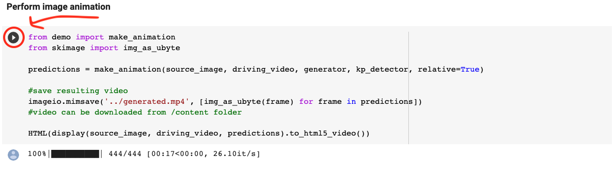

If you've found this article useful consider donating.
Table of Contents
- Deepfake video examples
- Background
- Things you'll need
- Before starting
-
Creating your own deepfakes
- (Step 1) Cloning the Repo
- (Step 2) Change your directory
- (Step 3) Mounting your Google drive folder on Colab
- (Step 4) Downloading the checkpoint (".pth.tar") files
- (Step 5) Create a folder called "first-order-model-motion" in your Google Drive
- (Step 6) Loading your image and video
- (Step 7) Creating the model and loading the checkpoints
- (Step 8) Creating the deepfake
- (Step 9) Saving your deepfake
- Errors
- Using your own image
- Using your own video
- Video tutorials
Deepfake video examples
Background
In case you don't know, deepfakes are faked media that mimic another person's likeness, like so. This process is achieved through something called "deep learning," hence the name deepfake.
Creating your own deepfakes has been possible for a while now but the problem was that it required a lot of data, computing power, and time.
But now, thanks to the researchers Aliaksandr Siarohin, Stéphane Lathuilière, Sergey Tulyakov, Elisa Ricci and Nicu Sebe, their paper "First Order Motion Model for Image Animation," and their implementation, we are now able to create a deepfakes with a single image.
Better yet, not only can we create deepfakes with a single image, but they also don't take hours or days to make, now they take only mere seconds and at most a couple of minutes. In addition, no coding experience is required.
If you'd like to understand more of how this works, you can watch this video by Two Minute Papers.
Things you'll need
- A Google account
-
An image of what you want to animate
- We'll be using a picture of The Mona Lisa
-
A video to extract the animation from
- We'll be using a video of Leonardo DiCaprio's face
- Some free time
Before starting
Sign in to your Google account
Once you go to the Google colab, you'll be greeted with a page that looks like the following:
You'll need to sign in to your Google account to interact with this document.
I'd suggest you create a new Google account here.
Connecting to the Google Colab
After you have signed in, you'll want to actually connect to the Colab.
To do so click on the connect button at the top right of the page.

If you don't get any error messages, you can skip straight to (Step 3).
If you get the following message, that means that you won't be able to use Google's GPU which essentially means you can't follow the tutorial at this time because all the GPUs are being used.
To fix this, you can either (1) wait and come back later, (2) upgrade to colab pro, (3) run this repository locally on your own machine (not covered in this tutorial but you can go here to follow a tutorial), or (4) create another Google account and try again.
If you click "Connect Without GPU" then, later on, you'll encounter the following error:
Creating your own deepfakes
Let's get started creating our own deepfakes.
(Step 1) Cloning the Repo
Once you are signed in, you'll want to hover over the brackets under the "Clone Repository" header.
You'll want to click on that play button to clone their repository.
(Step 2) Change your directory
Once you finish cloning the repository, you'll want to change your current directory to "first-order-model" by clicking on the next play button like so:
(Step 3) Mounting your Google drive folder on Colab
Next, you'll want to mount your google drive folder on the colab by clicking the next play button.
Before this can actually happen however, you have to click the link allowing the permission to do so:
Then you'll be prompted to sign in to your Google account again. Sign in to the same google account you originally signed into since starting this tutorial.
You will then see the following page:
Copy and paste the authorization code into the colab like so and hit enter:
(Step 4) Downloading the checkpoint (".pth.tar") files
Now you'll want to click on the following link:
You'll then get sent to a Google drive that will have several files.
You only need to download the files called "vox-adv-cpk.pth.tar" and "vox-cpk.pth.tar" but I would also suggest you download a video and an image from here too.
For the purposes of this tutorial, I'll be downloading the aforementioned files as well as "05.png," which is an image of The Mona Lisa, and "10.mp4," which is a video of Leonardo DiCaprio's face.
Downloading the files may take some time so just be patient.
(Step 5) Create a folder called "first-order-model-motion" in your Google Drive
Now you'll want to navigate to your Google Drive and create a folder called "first-order-motion-model" like so:
It's in this folder that you'll want to upload the files you just downloaded.
Note: You can also upload your own video and images but just make sure they are cropped to 256px by 256px.
For the purposes of this tutorial, we'll just be using an image of The Mona Lisa and a video of Leonardo DiCaprio's face.

This will also take some time so just be patient.
(Step 6) Loading your image and video
Now you want to go back to the Google Colab and under the "Load driving video and source image" header, make sure that 'source_image' and 'driving_video' point to the image and video you uploaded to your google drive.
Just make sure that the ending of the path has the correct name, i.e. '.../your_image_file.png' and '.../your_video_file.mp4'
Now you want to go ahead and click the play button.
This will take a couple of seconds but once that's done, scroll down and you should see something like this

(Step 7) Creating the model and loading the checkpoints
If you scroll down a bit further you should see the the following:
In the image above you see a square icon because I was already running it but you should see a play icon.
Click on the play button and wait for it to finish.
(Step 8) Creating the deepfake
Now is the moment you've been waiting for, actually creating the deepfake.
Scroll down until you see the header "Perform image animation" and click on the play button like so:

Now you'll have to wait a little more but once that finished you should see something like the following:

Congrats! You just created your first deepfake!
(Step 9) Saving your deepfake
Now to actually save it, hover over the video and you should see an icon with three vertical dots.
Click on the icon with three vertical dots and then click download.
And voila, you're done!
Errors
If you encounter any errors, you can try to reset the runtime by doing the following:
Click on the "Runtime" tab.
Click on "Factory reset runtime."
Click "Yes" and reload the page.
If you still encounter errors you can watch this video here.
Using your own image
To use your own image, simply grab any facial image and crop it to 256px by 256px.
Also, make sure it's saved in the ".png" format.
Other image types may work, such as .jpg, but .png will give you the best results, at least in my experience.
Using your own video
If you want to use your own video you also have to crop it to 256px by 256px.
The Google colab provides a tool for you to do this.
Before we can actually crop our own video, we have to upload our video to our Google drive.
Scroll down to the header that says "Running on your data"
You'll want to paste the following line making sure you replace ".../my_video_file.mp4" to match your file name.
!ffmpeg -i /content/gdrive/My\ Drive/first-order-motion-model/my_video_file.mp4 -s 256x256 -c:a copy /content/gdrive/My\ Drive/first-order-motion-model/result.mp4Then you should see a video called "result.mp4" in your google drive.
You can then use this video in step 6 and onward making sure that you use the name "result.mp4" for the video.
The video result can be a hit or miss. I'd suggest you crop the video yourself using video editing software.
Video tutorials
- In this tutorial, he makes you paste the following line of code: "!pip install PyYAML==5.3.1" at the beginning of Step 1. This line is not necessary.
Creating a deepfake without using Google Colab.